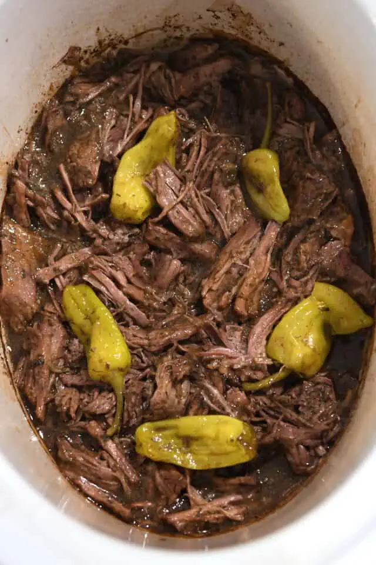

Mississippi Roast

Description
I got this recipe from my old manager. It sounded so simple I had to try
it out. I love pepperoncini peppers and there were only 5 ingredients.
Sounds like the perfect meal for a busy family. I did not expect it to become
a go to recipe and shoot up the leaderboard like it did. However, it's so good
I'm not even a little bit mad about it.
Ingredients
- 1 Beef Roast
- 1 Stick Butter
- 1 Packet Au Jus seasoning mix
- 1 Packet Ranch seasoning mix
- 7-10 Pepperoncini Peppers
Steps
- Pull out your slow cooker and plug it in
- Place beef roast in the slow cooker
- Place stick of butter on top of the roast
- Empty contents of both seasoning packets on the
roast/butter mixture
- Slow cook on low temperature for 8 hours
- At 7.5 hours shred the Beef Roast and allow it to
finish cooking while shredded for the next half hour to really
soak all the juices into every fiber of the meat
- Serve warm
Dig In!